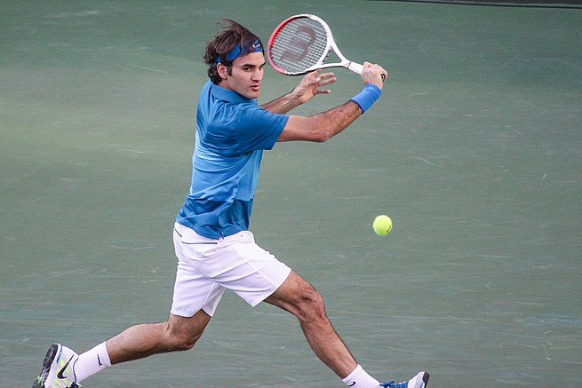

TENNIES
Tennis is a racket sport that is played either individually against a single opponent or between two teams of two players each. Each player uses a tennis racket that is strung with cord to strike a hollow rubber ball covered with felt over or around a net and into the opponent's court.
No. Of Players : 2 players
Triples Tennis is fast moving, engaging, and accommodates 6-8 players per court with tons of touches on the ball. The Triples game is 3 vs 3 with one player at net and two players on the baseline. Players complete a half-court circular rotation after every point.
Popularity :
Cricket is the most widely played sport in India, and Indians all across the subcontinent have a passionate dedication to the game and a dedicated fanbase for it. Even if just 75% of people watched cricket, that's still about a billion people, which is one-eighth of the total population of the planet.

Rules :
> A ball must land within bounds for play to continue; if a player hits the ball outside of bounds, this results in the loss of the point for them.
> Players/teams cannot touch the net or posts or cross onto the opponent's side.
> Players cannot hit the ball twice.
> Players must wait until the ball passes the net before they can return it.
> Players/teams cannot carry the ball or catch it with the racquet.